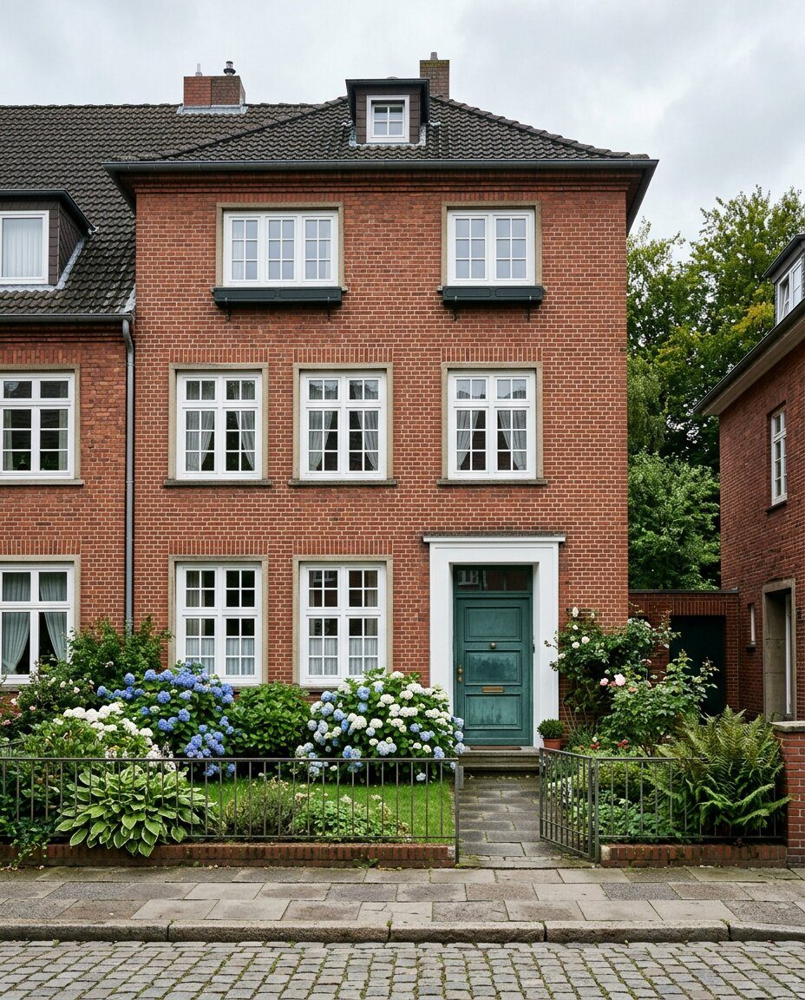
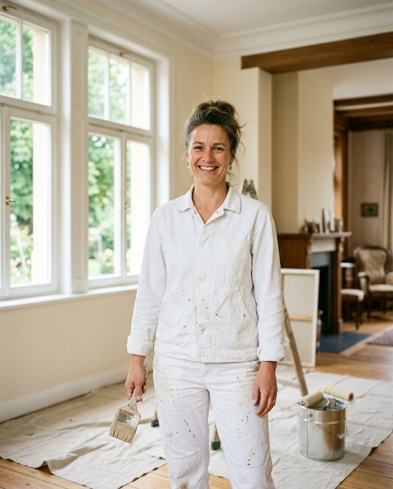
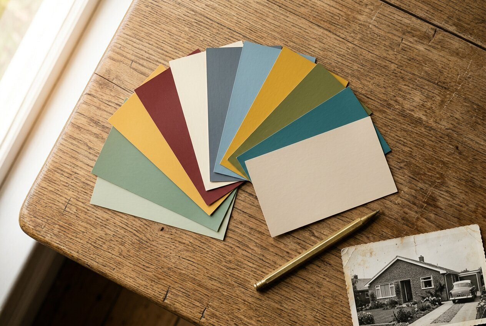
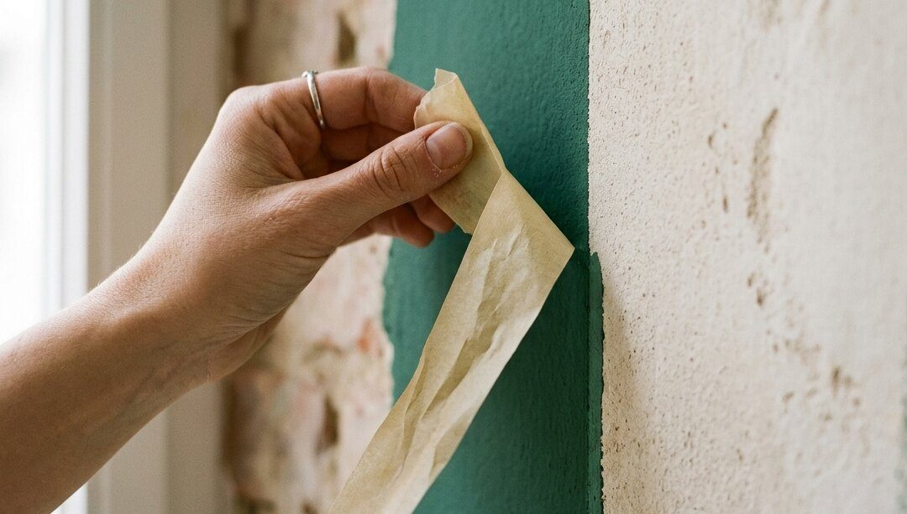
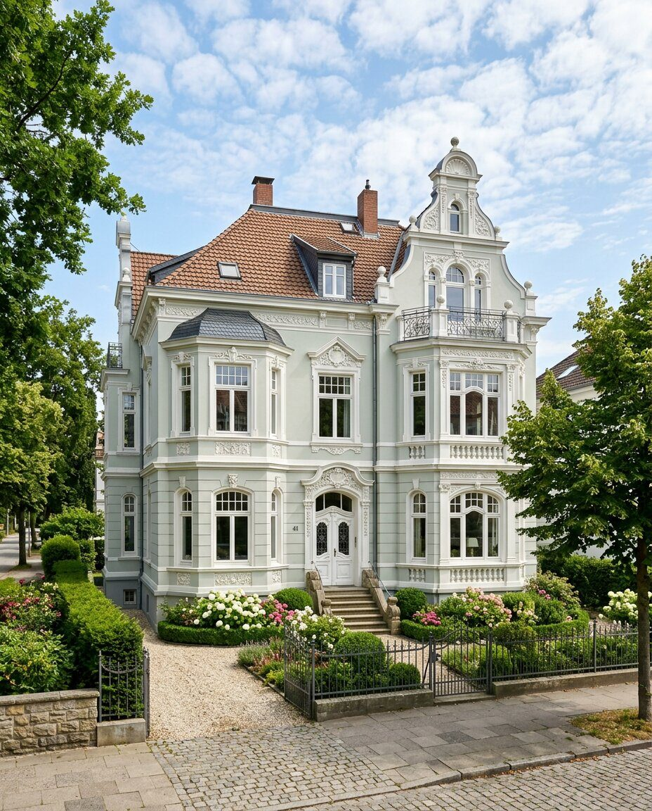
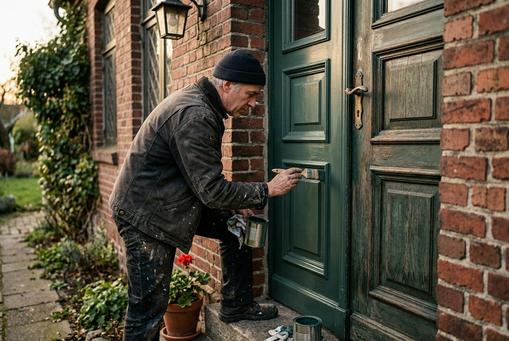
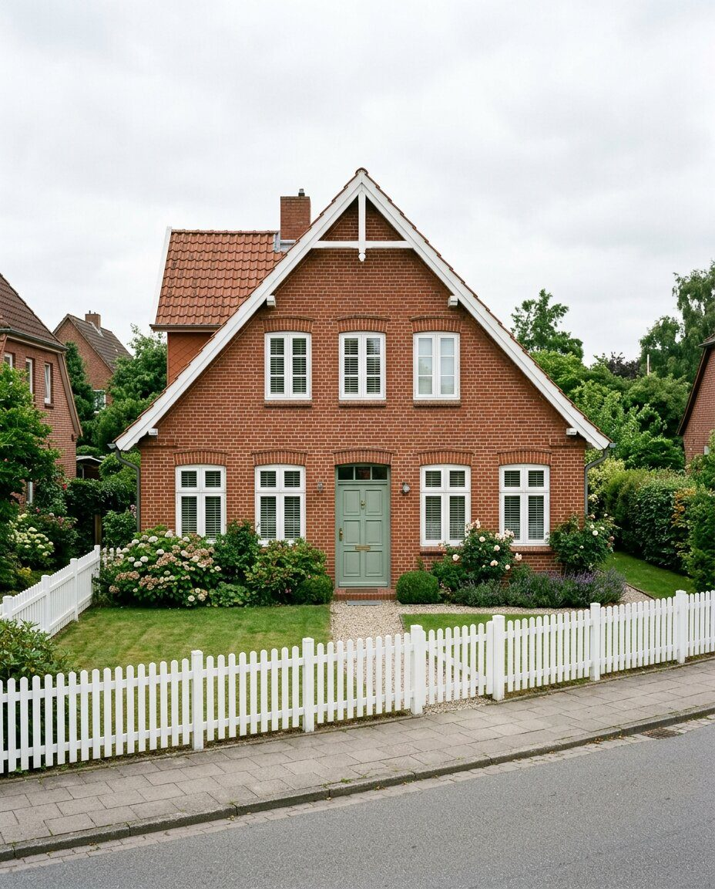
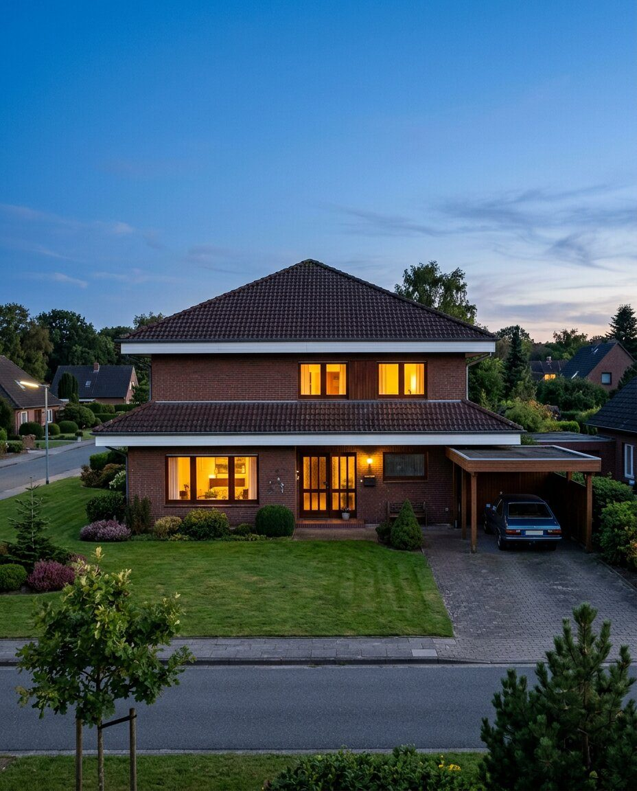

Es ist ein
Modell 1931.
Jetzt in Grünspan.Innenräume, Fassaden, Türen und Fenster – sauber abgeklebt, aufgeräumt übergeben und in Farben, die zum Baujahr Ihres Hauses passen.

KI-PlatzhalterModell 1931 · Kiel-[Stadtteil] · Fenster weiß, Tür in Grünspan
Ich bin [Name], Malermeisterin.
Ich schaue mir Ihre Wände selbst an.

KI-PlatzhalterJedes Jahrzehnt hat
seine Farben.
Ihr Haus ist kein Altbau, sondern ein Modell seiner Zeit. Sagen Sie uns das Baujahr – wir zeigen Ihnen, welche Farben damals typisch waren und wie sie heute gut aussehen.
Farbkarte für mein Baujahr anfordern →Was wir streichen.
Vom einzelnen Zimmer bis zur ganzen Fassade.
Innenräume
Wände, Decken, Treppenhäuser – mit Spachtel, Tapete oder Kalkfarbe.
Fassade
Putz, Klinker-Fugen, Holz – mit dem richtigen Material für das Baujahr.
Türen und Fenster
Alte Haustüren und Rahmen schleifen, lackieren, erhalten.
Nach dem Umbau
Wenn Heizung, Bad oder Leitungen neu sind, machen wir die Wände wieder schön.
Sauber rein.
Sauber raus.

KI-PlatzhalterModelle aus Ihrer
Nachbarschaft.
Gleiches Modell, neue Farbe.

KI-Platzhalter
KI-Platzhalter
KI-Platzhalter
KI-PlatzhalterNeue Farbe, alte Heizung?
Unser Schwesterbetrieb prüft mit dem Baujahr-Check, ob eine Wärmepumpe zu Ihrem Haus passt – am besten, bevor frisch gestrichen wird.
Zum Baujahr-Check von kernpartner wärme ↗Zeigen Sie uns
Ihre Wände.
Schicken Sie zwei, drei Fotos und das Baujahr. Wir melden uns mit einer ersten Einschätzung.
0431 · [Nummer]